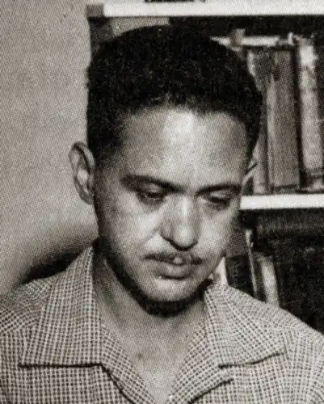

(7 квітня 1915 р — 4 лютого 1958 р
псевдоніми:
C. H. Liddell Lawrence O'Donnell Hudson Hastings Льюїс Педжетт (Lewis Padgett) Генрі Каттнер народився 7 квітня 1914 року в Лос-Анджелесі. Батько Каттнера тримав книжковий магазинчик — він помер, коли Генрі було всього п'ять років. Більшу частину дитинства майбутній письменник провів у Сан-Франциско, куди його мати перебралася в пошуках заробітку. Вона містила пансіон, що дозволило забезпечити Генрі і двом його старшим братам навчання в школі. На той час, коли Генрі повинен був перейти в старші класи, сім'я повернулася в Лос-Анджелес, і після закінчення школи Генрі влаштувався на роботу в літературна агенція, власницею якого була дружина одного з його братів. Інтерес до фантастики у нього, як і у більшості письменників його покоління, проявився рано. Він почав з "Чарівника країни Оз", зачитав до дірок "Принцесу Марса" — і в віці дванадцяти років попався на гачок під назвою "Amazing Stories". З роками, однак, його пристрасті змістилися від наукової фантастики до розповідей жахів — він став пристрасним шанувальником журналу "Weird Tales", листувався з Говардом Лавкрафтом і авторами його гуртка. А в 1936 році дочекався першої публікації — лютневий випуск "Weird Tales" надрукував його вірш "Балада богів", написане під очевидним впливом Роберта Говарда. Через місяць той же журнал опублікував дебютний розповідь Каттнера "Кладбищенские щури", який до цих пір вважається одним з найстрашніших творів у всій літературі жахів. Для молодого письменника це було величезне досягнення. Незважаючи на те, що в оповіданні виразно відчувалися мотиви, традиційні для творчості Лавкрафта, незважаючи на те, що літературний досвід Каттнера був тоді мізерним, "Кладбищенские щури" стали одним з найбільш емоційно яскравих його творів. Розповідь був дуже хороший для дебютанта, багато хто висловлював припущення, що під ім'ям "Генрі Каттнер" ховається хтось із майстрів ... У травневому номері "Weird Tales" редактор Фернсуорт Райт ці чутки відкинув: "Генрі Каттнер — це не псевдонім. Це молодий, але, без сумніву, надзвичайно обдарований автор, і можна впевнено припустити, що в майбутньому його чекає великий успіх "... Іронія долі — це було написано про автора, який знайшов справжню славу під псевдонімом ... У тому ж 1936 році Каттнер вступає в Лос-Анджелеському осередок Ліги Наукової Фантастики. Його розповіді продовжували регулярно з'являтися в "Weird Tales", але він уже зовсім не був схожий свого недавнього кумира — Лавкрафта. Каттнер був блискучим жартівником, прекрасним співрозмовником, легко сходився з людьми і був щедрий на ідеї (до речі, деякі ідеї його ранніх оповідань використовували пізніше такі корифеї, як Сібері Куїн і Е. Хоффман Прайс) ... У 1937 році він пробує себе в співавторстві з Робертом Блохом і трохи пізніше — з Кетрін Мур. Кетрін народилася в Індіанаполісі в 1911 році і, схоже, приречена була стати письменником — з самого дитинства вона вигадувала довгі і неймовірно цікаві історії і розповідала їх кожному, кого їй вдавалося досить надовго загнати в кут. Навчившись писати, вона стала переносити свої історії на папір. Імена її герої носили різні, але дізнатися їх не становило жодних проблем — були це Тарзани, Робін Гуди і Ланселот. Так тривало до 1931 року, коли Кетрін попався в руки журнал з інтригуючою назвою "Amazing Stories". (Чому історія вічно спотикається об цей пеньок? Або мають рацію ті, хто стверджує, що деякі основні нитки в тканині світобудови досить товсті, щоб ми могли їх помітити?) У листопаді 1933 року журнал "Weird Tales" опублікував дебютний розповідь якогось К. Л. Мура. Оповідання називалося "Шамблі" і був, на думку редакції, приголомшливим. Його удостоїв похвальним відгуком навіть сам Г. Ф. Лавкрафт, а вже захоплення читачів просто не було меж. Кар'єра дебютанту була забезпечена ... До 1937 року дебютант перетворився в одного з визнаних авторитетів. Те, що "К. Л. "розшифровується як" Кетрін Люсіль ", стало відомо досить скоро, але коло посвячених у цю таємницю був вузький і розширювався повільно і неохоче. Схиляння за родами в англійській мові не прийнято, що робить дуже зручним збереження подібних невеликих секретів. Тим більше, фантастика традиційно залишалася чоловічим жанром ... Знайомство Каттнера з Кетрін почалося з курйозу. Каттнера розповіді "Мура" активно подобалися, але він ніяк не знаходив приводу зав'язати листування з їх автором. І ось одного разу Г. Ф. Лавкрафт попросив Каттнера, який перебрався тоді на Східне Узбережжя, переслати Мур книги, які брав на читання. Привід був самий що ні на є гідний, і Каттнер написав "містерові Муру" лист. Відповідь він, на свій подив, отримав від "міс Мур" ... Вони вперше побачили один одного тільки в 1938 році, через кілька місяців після того, як "Weird Tales" надрукував їх спільний розповідь "У пошуках Зоряного Каменя" (співавтори писали його, обмінюючись фрагментами тексту поштою). Шедевром ця розповідь не був, однак певний вплив на розвиток фантастики все-таки надав — причому абсолютно несподіване. Герой розповіді співав пісню, яка закінчувалася так: ... Пройшовши крізь темряву назустріч смерті, Ми в битвах грізних полягли, Але бачили ми в мить останній Пагорби зелені Землі ... Через кілька років останній рядок була вкладена Робертом Хайнлайном в уста Сліпого Барда Космосу і навіки стала класикою. Напевно, це був Знак. Кетрін, в загальному, в грошах не потребувала, але Генрі повинен був заробляти на хліб насущний в поті чола свого. "Weird Tales" публікував розповіді Каттнера часто, але гонорарів на життя не вистачало. Писати наукову фантастику Генрі побоювався. Освіти у нього не було, і він не без підстав вважав, що в літературі технічних ідей йому робити, за великим рахунком, нічого. Залишалися бульварні жанри. В кінці тридцятих в США розвелося безліч журнальчиків, які друкували "брудні" детективи і сексуально-містичні розповіді. Каттнер штампував їх буквально пачками і публікував де завгодно — як під своїм ім'ям, так і під псевдонімами (багато з яких вже ніколи не будуть розкриті). Так йому вдавалося утримуватися на плаву. Але заплатити за це довелося репутацією. Гірка слава літературного поденника і автора "порнухи" міцно прилипла до його імені. Одного разу Каттнера вдалося прилаштувати пару "лівих" повістей в НФ-журнал "Marvel Science Stories", але це призвело майже до катастрофи — на редакцію посипалися протести читачів і Каттнер став для світу фантастики мало не ізгоєм ... Втім, це не завадило йому зустрічатися з Кетрін. Їх все більше і більше тягнуло один до одного. 7 липня 1940 року відбулася весілля. З тих пір вони завжди були разом. І навіть коли Генрі під час війни був направлений для проходження служби в медкорпус в Форт Монмут (через серцевої недостатності він був визнаний непридатним до стройової), Кетрін поїхала слідом за ним. Головне — вони продовжували працювати. Разом. З цього моменту Каттнер не залишили жодного оповідання, який не був "причесаний" Кеті, а всі розповіді, написані Мур, набували закінченість в суворих руках Генрі. Він привносив в прозу динаміку і лють, вона — витонченість і шарм. По суті, вони стали єдиним цілим, одним письменником. І цей письменник був генієм. Його звали то Лоуренс О'Доннелл, то Льюїс Педжетт, то Кетрін Мур, то Генрі Каттнер. Але розповіді його були майже завжди приголомшливо хороші. "Все теналі борогови", "Механічне его", "Житлове питання", "Музична машина", блискучі гумором цикли про Хогбенах і Геллегере — і нескінченно сумний шедевр "Краща пора року" ... Так, "Краща пора року" майже цілком написала Кетрін, а "Лють" — здебільшого Генрі, але хто саме сидів за машинкою, перестало мати для них будь-яке значення. Вони досягли гармонійного єдності. І Кетрін не бачила нічого поганого в тому, що написані переважно нею розповіді перевидаються в збірниках, на обкладинках яких варто тільки ім'я Генрі. Це було неважливо. Світ фантастики залишався світом чоловіків, і боротися з цим було безглуздо. Та й не хотіла вона з цим боротися ... А потім секрет Льюїса Педжеттом перестав бути секретом. Прийшовши успіх не сп'янив і не змусив розслабитися. Каттнер все ще гостро відчував брак освіти. У 1950 році він вступив до Університету Південної Каліфорнії — і Кетрін пішла за ним. Він закінчив курс за три з половиною роки і взявся за магістерську дисертацію, одночасно ведучи в університеті клас літературної майстерності. Вона продовжувала вчитися. І вони продовжували писати. З'являлися нові повісті, по одному розповіді в 1952 році був знятий фільм, серії оповідань зливалися в романи — але все це було як би мимохідь, для того, щоб якось прожити, для того, щоб не втратити швидкості пальців. Справжня робота ще тільки попереду була ... Прийшло нове і дуже привабливу пропозицію з Голлівуду. Дисертація Генрі була практично закінчена. Залишилося тільки підготувати тези. Сценарій фільму котився як під гору. Світ обертався навколо них — все швидше ... Каттнер померла 4 лютого 1958 року. Серцева недостатність, яка врятувала його від окопів Другої світової, врятувала його і від життя в бурхливих шістдесятих. Він не бачив ні польоту Гагаріна, ні вбивства Кеннеді, ні "Бітлз" ... Кетрін звично закінчила початий ним сценарій і кілька повістей, чотири роки читала його студентам лекції з літературної майстерності. Потім були нові сценарії для кіно і телебачення, рідкісні розповіді, передмови — і довга-довга самотня життя ... А в Радянському Союзі, де в кінці п'ятдесятих раптом спалахнув інтерес до перекладної фантастики, почали один за іншим переводитися їхні розповіді. Зазвичай вони виходили під іменем Генрі. Лише зрідка її ім'я згадувалося десь в примітці. Але це було і раніше не має значення ...